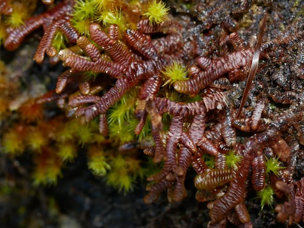

Goebeliellaceae
Goebeliella Family
Goebeliellaceae is a monotypic family of leafy liverworts, containing only Goebeliella cornigera, endemic to New Zealand and New Caledonia. These distinctive plants grow as pendent epiphytes and are characterized by incubous, entire (unlobed), concave leaves and the complete absence of underleaves and leaf lobules, representing a simplified morphology within the order Porellales.
Overview
The Goebeliellaceae family is unique, containing just a single species, Goebeliella cornigera, restricted to humid forest environments in New Zealand and New Caledonia. This liverwort typically grows as a pendent epiphyte, hanging from tree branches and twigs, often forming pale green or yellowish-brown strands. Its morphology is notably simplified compared to its relatives in the order Porellales.
The most striking features are the leaves, which are incubously arranged but lack the ventral lobule characteristic of most Porellales (they are not complicate-bilobed). Instead, the leaves are simple, entire (unlobed), broadly rounded, and strongly concave or hood-shaped. Furthermore, underleaves are completely absent. This combination of incubous, entire leaves and no underleaves is highly unusual within the order. The plants often exhibit regular pinnate branching.
Goebeliellaceae's unique morphology, likely derived through secondary simplification (loss of lobule and underleaves), and its restricted geographic distribution make it an important subject for phylogenetic and biogeographic studies within the Porellales.
Quick Facts
- Scientific Name: Goebeliellaceae
- Common Name: Goebeliella Family
- Number of Genera: 1 (Goebeliella)
- Number of Species: 1 (Goebeliella cornigera)
- Distribution: Endemic to New Zealand and New Caledonia
- Evolutionary Group: Liverworts (Marchantiophyta) - Jungermanniopsida - Porellales - Porellineae
- Key Feature: Incubous entire concave leaves, NO lobules, NO underleaves.
- Habitat Specificity: Pendent epiphyte in humid forests.
Key Characteristics
Gametophyte Form and Habit
Plants are medium-sized, typically growing as pendent strands or forming loose mats hanging from branches and twigs. Color is usually pale green, yellowish-green, or light brownish. Stems are slender, typically regularly pinnately branched with Frullania-type lateral branches.
Leaves and Underleaves
Leaves are arranged incubously and are usually distant to contiguous, not densely overlapping. They are simple and unlobed, broadly ovate to almost circular, with a rounded apex and entire margins. Leaves are strongly concave or hood-shaped (cochleariform). Crucially, they are NOT complicate-bilobed; a ventral lobule is absent. Underleaves are completely absent.
Rhizoids
Rhizoids are sparse, usually colorless, and typically restricted to the bases of branches.
Cellular Structure
Leaf cells are typically isodiametric (polygonal), thin-walled to slightly thickened. Trigones are usually distinct but often small to medium-sized. Oil bodies are present, typically granular.
Asexual Reproduction
Asexual reproduction via gemmae is absent.
Reproductive Structures
Plants are dioicous.
- Antheridia are borne in the axils of saccate bracts on specialized, short, spike-like lateral branches.
- Archegonia are terminal on short lateral branches, surrounded by several pairs of bracts that are similar to vegetative leaves but may be slightly larger.
- A large, prominent perianth is present, exserted beyond the bracts. It is characteristically inflated, ovoid to pyriform (pear-shaped), and typically strongly 3-5 plicate (folded) towards the abruptly contracted, often beaked mouth. The perianth is not dorsiventrally compressed. Marsupia are absent.
Sporophytes and Spores
The sporophyte develops within the perianth. The seta is relatively long. The capsule is spherical, dark, with a wall composed of two layers of cells. Dehiscence occurs via four valves.
Field Identification
Identifying Goebeliellaceae involves finding pendent epiphytes in New Zealand or New Caledonia and recognizing the unique combination of entire, incubous leaves and the complete absence of underleaves.
Primary Identification Features
- Habit: Pendent epiphyte hanging from branches/twigs.
- Leaves: Incubous arrangement; leaves entire, unlobed, rounded, strongly concave/hooded. No ventral lobule.
- Underleaves: Completely absent.
- Branching: Often regularly pinnate.
- Habitat & Distribution: Humid forests in New Zealand / New Caledonia.
- Perianth (if fertile): Large, inflated, plicate (3-5 folds), with a beaked mouth.
Secondary Identification Features
- Color: Often pale green or yellowish-brown.
- Gemmae: Absent.
- Cells (Microscopic): Distinct trigones usually present.
Seasonal Identification Tips
Goebeliellaceae gametophytes are perennial:
- Year-Round: The pendent habit and unique leaf/underleaf characters are always visible in suitable forest habitats.
- Reproduction: Perianths may be present on female plants, aiding confirmation.
Common Confusion Points
The combination of features is quite distinct, but confusion might arise with:
- Porellaceae (Porella): Also epiphytic/epilithic with incubous leaves, but leaves are complicate-bilobed (have a distinct lobule) and possess large, undivided underleaves.
- Radulaceae (Radula): Epiphytic/epilithic with incubous, complicate-bilobed leaves, but lacks underleaves. Differs in having a distinct lobule and rhizoids arising only from the lobule.
- Simple-leaved Jungermanniaceae or Plagiochilaceae: May have entire leaves but typically have succubous leaf arrangement, differ in branching, cell structure, perianth shape, and usually lack the strictly pendent habit. Plagiochila also lacks underleaves but leaves are often asymmetric/toothed.
- Metzgeriales (Thalloid Liverworts): Some pendent epiphytic Metzgeriales exist, but these lack the distinct stem-leaf differentiation of Goebeliella.
Field Guide Quick Reference
Look For:
- Pendent epiphyte (hanging)
- Regularly pinnate branching
- Leaves incubous, entire, rounded, concave
- NO ventral lobule
- Underleaves absent
- Inflated, plicate perianth (if fertile)
- NZ / New Caledonia only
Key Distinctions:
- Entire leaves + Incubous + No Underleaves
- No lobule (vs. present in Porella, Radula, Frullania, etc.)
- Underleaves absent (vs. present in Porella)
- Leaves incubous (vs. succubous in Jungermannia, Plagiochila)
- Pendent habit common
Notable Examples
The family is monotypic, containing only the genus Goebeliella:

Goebeliella cornigera
(No common name)
The sole species in the family, endemic to New Zealand and New Caledonia. It is readily identified by its pendent epiphytic growth, regular pinnate branching, incubous arrangement of entire, rounded, concave leaves, and the complete absence of both underleaves and leaf lobules. Fertile plants have distinctive large, inflated, plicate perianths.
Phylogeny and Classification
Goebeliellaceae is classified within the liverwort division Marchantiophyta, class Jungermanniopsida, order Porellales, and suborder Porellineae. Molecular phylogenetic studies confirm its placement within this order, which is characterized by incubous, usually complicate-bilobed leaves.
Despite belonging to Porellales, Goebeliellaceae exhibits a remarkably simplified morphology compared to its relatives like Porellaceae, Frullaniaceae, and Lejeuneaceae. It is believed to have secondarily lost the ventral leaf lobule and the underleaves that are characteristic of the order. This makes it a fascinating example of morphological reduction and highlights the evolutionary diversity within Porellales. Its isolated position and restricted distribution further emphasize its unique evolutionary history.
Position in Plant Phylogeny
- Kingdom: Plantae
- Clade: Embryophytes (Land Plants)
- Division: Marchantiophyta (Liverworts)
- Class: Jungermanniopsida
- Order: Porellales
- Suborder: Porellineae
- Family: Goebeliellaceae
Evolutionary Significance
Goebeliellaceae is significant for:
- Morphological Simplification: Provides a compelling example of secondary loss of complex structures (lobule, underleaves) within a lineage characterized by them (Porellales).
- Phylogenetic Position: Helps understand the evolutionary relationships and character evolution within the order Porellales.
- Endemism and Biogeography: Its restricted distribution to New Zealand and New Caledonia contributes to understanding the unique evolutionary history of the Australasian bryoflora.
- Adaptation: Its pendent epiphytic habit represents adaptation to specific humid forest microclimates.